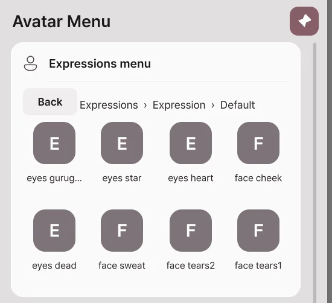
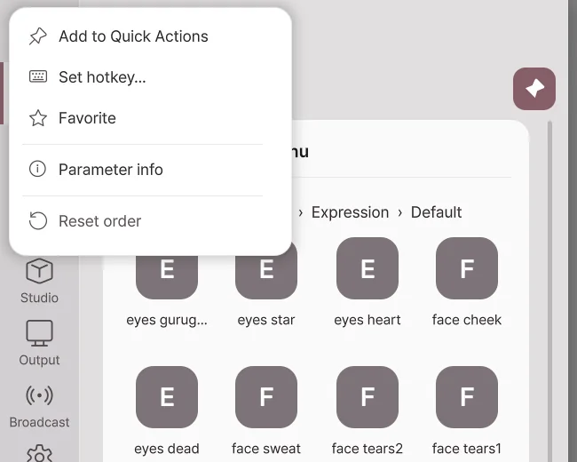
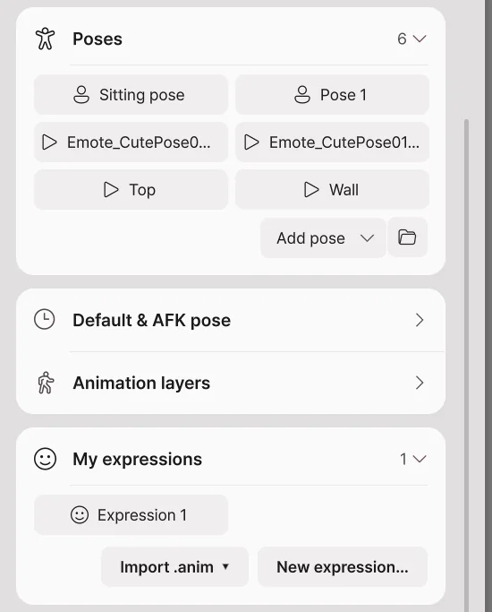
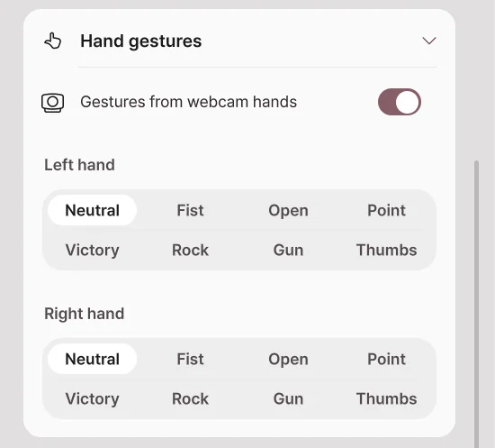

Avatar Menu
It uses features added by the avatar creator, such as clothing, hair, and facial expressions. Menu names and items vary depending on the model.
Change clothes and expressions

| operation | How it works |
|---|---|
| On/Off | Press once to turn on, press again to turn off. It is mainly used when changing clothes or decorations. |
| button to press | Applies only while pressed. If you let go, it will come loose. |
| circular slider | Move the knob to set a value between 0 and 100%. The color, size, and intensity of expression that are connected change. |
| directional pad | Move the handle left, right, up and down to adjust various expressions or values. |
| folder | Opens a submenu. Press Back to return to the parent menu. |
Immediately retrieve frequently used items

- Favorites: Find them quickly at the top of the menu.
- Add to Quick Action: Creates an action button in the bottom toolbar.
- Assign a shortcut: Execute the item using the keyboard.
As long as you press the shortcut key, it will be released when you release the key, and the toggle will remain until you press it again.
Posture and Tracking (Pro)

- Tap the posture tile to apply it.
- Expand tracking settings with the camera icon next to Posture.
- Turn facial, head, arms, fingers, and torso on or off respectively.
The area that is turned on follows your movements, and the area that is turned off maintains the saved posture. For example, if you turn off the head and turn on the facial, only the facial expression moves while the head stays still.
Tracking by Posture
Press the side posture camera button to turn on and off the face, head, arms, fingers, and torso individually.
- Lit area: Follows my movement.
- Extinguished area: Maintain the stored position.
- Example: Turn off your arms and turn on your hair or facial; maintain your arm pose while moving your head and expression.
Basic Stance and Ready Position

| Select | When using |
|---|---|
| Basic Posture | This is the standard posture for areas that are not usually tracked. |
| AFK Waiting Stance | This is the stance to use when you lose the trail. |
| Idle Expression | The expression that will be automatically applied while AFK. |
| Desk posture | This is the arm and hand posture to use when your hands are not visible on the camera. |
The time to transition to the idle position is adjusted in When Tracking is Lost.
When Tracking is Lost

AFK is the idle state used when both face and body tracking are lost. The time is set in Menu → Default·AFK Pose.
| Time | Effect of Longer Setting |
|---|---|
| Waiting Time | Maintains the pose even if input briefly stops and waits longer. |
| Transition Time | Slowly transitions to the idle pose. |
| Return Time | Slowly returns to normal operation after input resumes. |
The pose and expression to use while idle are selected in Default Pose and Idle Pose.
my expression
You can adjust and save the face shape by creating a new expression, or.animLoad the facial expression file.

- Click 'Create New Expression.'
- Move the face's shape keys to create an expression.
- Check from 0% neutral to 100% expression with the preview intensity.
- Save it.
- Click your expression tile to apply it.
You can also add Unity expression animations by importing .anim files. The moving file changes expressions over time, and whether it loops depends on the file settings.
hand gestures

Choose between left and right hand fist, scissors, open fist, etc. If an expression for each hand shape is linked to the avatar, the expression changes as well. When you turn on gestures with webcam hand shapes, they use real hand shapes.
revert
If you press Avatar Parameters → Revert to Default, menu values such as clothing and facial expressions will return to the avatar's default values.
Hierarchy and ShapeKeys
- Hierarchy: Shows the avatar's parts as a tree. Turn parts on and off with checks.
- Eye Icon: Hide the part from the screen while keeping it functional.
- Mesh: Search for parts that draw outlines.
- Shape Key: Directly adjust the amount of deformation of the face or body. Manually fixed values may override tracking.